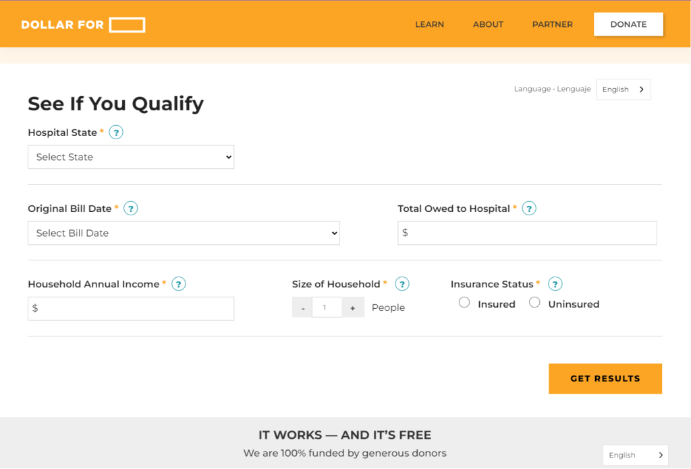
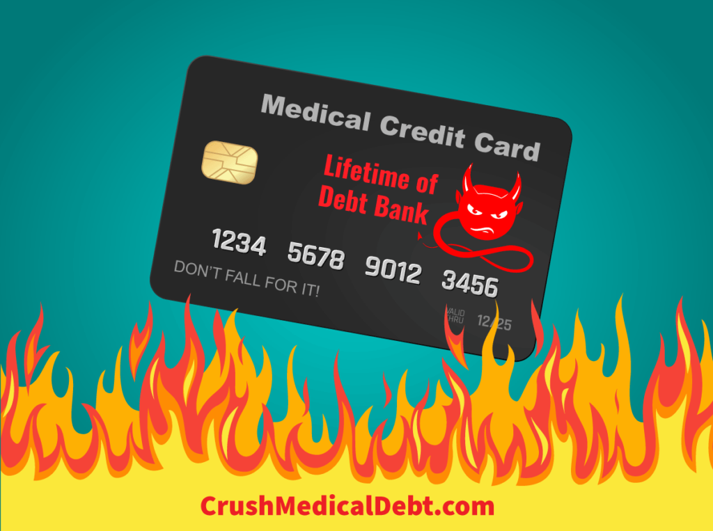

Have you been hit with unaffordable medical bills after a trip to the hospital or ER? Perhaps you found out the hard way that your insurance didn’t offer you enough coverage for these unanticipated expenses. Or worse, you had no healthcare coverage when you had to seek medical services. If this makes you worry about your credit score and financial well-being, you may be asking, “How can I get help paying medical bills? Are there financial assistance programs available?”
What is Financial Assistance or Charity Care?
Federal law requires nonprofit hospitals to demonstrate a community benefit as a condition of receiving tax-exempt status. This includes providing charity care or sliding-scale income-based discounts for eligible patients.
The Internal Revenue Service (IRS) defines “charity care”, also known as “financial assistance”, as “free or discounted health services provided to persons who meet the organization’s eligibility criteria for financial assistance and are unable to pay for all or a portion of the services”. This financial assistance can help reduce or even eliminate your medical debt.
Financial Assistance Policies Are Not All Alike
Hospitals have broad flexibility to establish their own Financial Assistance Policies (FAPs). Federal regulations do not set minimum standards for hospitals to determine eligibility for charity care or the level of assistance provided. Therefore, FAPs vary by the hospital in terms of eligibility criteria, application processes, and the levels of care provided.
Some FAPs are more generous than others. Charity care may be provided to both uninsured and underinsured patients for emergency or other medically necessary care. Additionally, these policies may only cover certain physicians, require patients to live in certain zip codes, or have very limited resources.
Dollar For’s national FAP database shows that, on average, households under 212% of the Federal Poverty Level will qualify for free care, and families under 311% will qualify for discounted care (in 2024).
FAPs of non-profit hospitals in Texas generally provide charity care to people who are:
- Financially indigent – income is under 200% FPL (or more, depending on the hospital)
- Medically indigent – someone uninsured or underinsured whose medical bills, after all third-party payments, are equal to or greater than 5% of their yearly income and whose income is generally under 500% FPL (depending on the hospital)

How to Apply for Charity Care
A free and easy way to screen for eligibility for a hospital’s charity care policy is by visiting DollarFor.org.
The Affordable Care Act (ACA) requires hospitals to have a readily available written Financial Assistance Policy (FAP) and a written Emergency Medical Care policy.
FAPs must include specific information such as:
- eligibility criteria
- whether the care is free or discounted
- basis for calculating what to charge the patient
- how to apply
These policies and how to apply can be found on the medical facility’s website and paper copies should be available at no charge. Additionally, hospitals must give you a paper copy of the FAP’s plain language summary during the hospital intake or discharge process. If a hospital’s charity care policy and application process are not clear, ask the hospital for an application and how to apply.
It is important to note that for-profit or private medical facilities may also have financial assistance policies to help pay your medical bills. Check with the individual facility.
Medical Credit Cards Disguised as Financial Assistance
Many medical providers will offer medical credit cards as financial assistance. That is not the same as charity care. Never put medical bills on consumer credit cards or loans. Learn more from our article, Before You Put That Medical Bill on a Credit Card, Read This!

Payment Plans and Crush Medical Debt
Even if you don’t qualify for charity care or income-based financial assistance, this doesn’t mean you have to pay the sticker price for healthcare. Crush Medical Debt teaches you to navigate medical bills and crush your medical debt in 3 steps. If you apply the 3 steps, you will have a reduced medical bill to negotiate payment with your provider.
Many medical provider’s financial assistance policies also mention payment plans as an option for paying off medical bills. This is a good option if the plan is:
- interest-free
- not on a medical credit card
- remains with the medical provider, not a third-party collector
- payments are affordable
Debt Collectors and Your Application for Assistance
Federal regulations require hospitals to make reasonable efforts to determine if a patient is eligible for charity care before engaging in certain debt collection activities, such as selling the patient’s debt to third parties, reporting the debt to credit agencies, and taking legal action against a patient’s financial assets. A reasonable effort could be notifying the patient of the FAP and giving them at least four months to apply following their first bill.
Although you can often apply for charity care after the debt has gone into collections, it’s better to apply as soon as possible. Additionally, you should notify any debt collectors trying to collect on the medical bills you’re seeking financial assistance for. Request that the debt collector stop collection activity and credit reporting while your application is pending with the hospital.
If you have a problem with debt collection for a debt you don’t owe because the bill has been or should have been covered by charity care, or if these bills appear on your credit report, you can submit a complaint with the CFPB online or by calling (855) 411-CFPB (2372).
More Resources
- CrushMedicalDebt.com: Learn medical financial literacy through our free newsletter, podcasts, and blog articles.
- DollarFor.org: Quickly screen for and get free help applying for charity care for hospital bills.
- PatientAdvocate.org: Get free help finding and applying for financial assistance resources from professional patient advocates.
- UndueMedicalDebt.org: This non-profit buys and pays off medical debt for others.
- 211.org: Find free local help and resources including non-profits and advocacy organizations, health clinics for low-income and/or uninsured patients, human resources, and social services.
- Use the HRSA database to locate Federally Qualified Health Centers in your area. They provide medical, dental and mental health services, regardless of insurance status.
Other Helpful Articles:
- The Best Way To Pay Medical Bills In 3 Steps
- How To Reduce Hospital and Medical Bills
- What If I Can’t Afford Health Insurance?
- Health Insurance Alternatives to the Affordable Care Act (ACA) or Obamacare
- Cash for Healthcare and Options for the Underinsured and Uninsured
- How To Remove Medical Debt From Credit Reports
Take-Aways
- Non-profit and some for-profit hospital medical facilities have Patient Assistance Programs (FAPs), including charity care, or income-based discounted care for eligible patients.
- Each facility has its own policy and eligibility criteria.
- FAPs, applications, and instructions on how to apply should be available on the facility’s website, as well as free paper copies, when requested, and when admitted or discharged.
- Easily screen for and apply for charity care for your hospital bills at DollarFor.org.
- Find local resources and helpful services available in your area by going to 211.org, or get help finding resources from PatientAdovcate.org